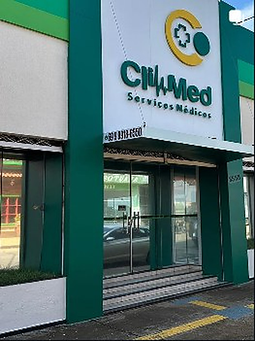
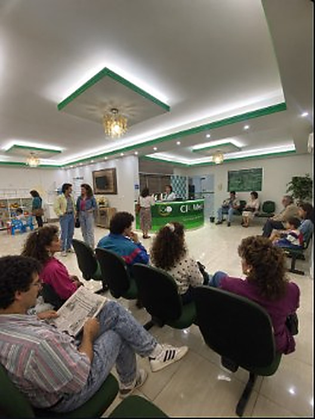
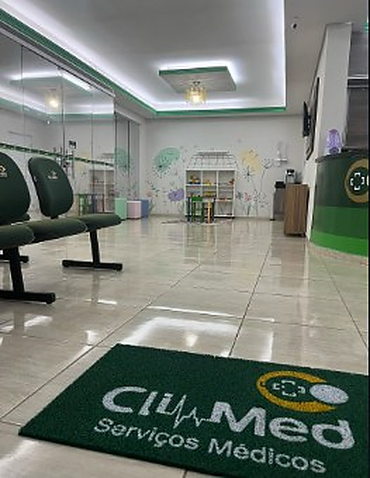

Porto Velho · Rondônia
Cuidado em saúde,
Cuidado em saúde,
perto de você.
A Climed reúne diferentes áreas de atendimento em um só lugar. Encontre a clínica e converse com a equipe para saber como podemos ajudar.
Informação clara para você
dar o próximo passo com tranquilidade.
dar o próximo passo com tranquilidade.

Estamos em Porto VelhoAtendimento em diferentes áreasUma equipe pronta para orientar você
BOAS-VINDAS À CLIMEDUm espaço pensado
Um espaço pensado
para cuidar de pessoas.
A Climed Serviços Médicos está em Porto Velho e divulga atendimento em diversas especialidades. Aqui você encontra informações para conhecer a clínica, consultar as áreas de atendimento e falar diretamente com a equipe.
Tire suas dúvidas com a equipe

Precisa de informações sobre consultas ou especialidades?
Converse com a equipe ↗ÁREAS DE ATENDIMENTOEncontre o cuidado
Encontre o cuidado
que você procura.
Estas são as áreas divulgadas nas publicações da Climed. Para confirmar profissionais, disponibilidade, convênios e horários, fale com a equipe.
Pediatria
Ortopedia
Medicina do trabalho
Psiquiatria
Geriatria
Fisioterapia
Nutrição
Ginecologia e obstetrícia
A relação acima foi baseada nas artes públicas enviadas como referência. A disponibilidade atual de cada especialidade deve ser confirmada diretamente com a clínica.
PODEMOS AJUDAR?Converse com a
Converse com a
equipe Climed.
Consulte informações sobre atendimentos, profissionais e agendamento pelo WhatsApp.
Chamar no WhatsAppCOMO CHEGAREstamos em
Abrir no Google Maps
Climed Serviços MédicosAgenor de Carvalho · Porto VelhoAbrir mapa ↗
Estamos em
Porto Velho.
Visite a Climed no bairro Agenor de Carvalho. Se estiver vindo pela primeira vez, confirme o endereço com a equipe antes de sair.
Climed Serviços Médicos
Av. Amazonas, 3558
Agenor de Carvalho · Porto Velho – RO